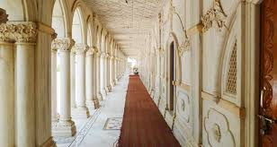

Dayal Bagh

|  | Dayal Bagh |
|
|---|---|---|
Book your Stay |
Dayal Bagh, situato vicino ad Agra, è un complesso religioso e tempio dedicato al fondatore della fede Radha Soami. Conosciuto per i suoi intricati lavori di marmo e sculture, il sito è un progetto continuo di costruzione. Dayal Bagh non è solo un luogo di straordinaria bellezza architettonica, ma anche un centro spirituale dove i seguaci praticano la meditazione e partecipano a iniziative comunitarie. |